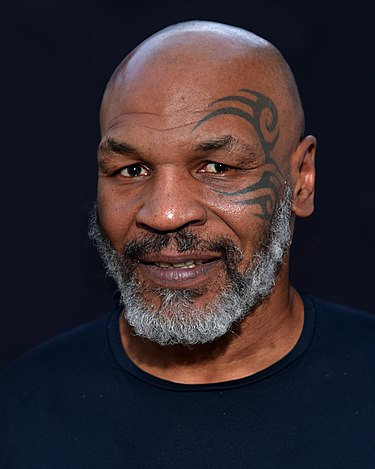

Майкл Дже́рард Та́йсон (англ. Michael Gerard Tyson; род. 30 июня 1966, Браунсвилл, Бруклин, Нью-Йорк, США) — американский боксёр-профессионал, выступавший в тяжёлой весовой категории; один из самых известных и узнаваемых боксёров в истории. Национальный Олимпийский чемпион США среди юниоров в первом тяжёлом весе (1982). Абсолютный чемпион мира в тяжёлой весовой категории среди профессионалов (1987—1990). Чемпион мира по версиям WBC (1986—1990, 1996), WBA (1987—1990, 1996), IBF (1987—1990), The Ring (1988—1990). Линейный чемпион (1988—1990). Победил 11 бойцов за титул чемпиона мира в тяжёлом весе[1]. Самый высокооплачиваемый боксёр в истории (до Флойда Мейвезера).
«Самый перспективный боксёр» 1985 года по версии журнала «Ринг». Лучший боксёр вне зависимости от весовой категории по версии журнала «Ринг» (1989—1990). «Боксёр года» по версии журнала «Ринг» (1986, 1988). «Боксёр года» по версии BWAA (1986,1988). «Спорт личность года» по версии BBC (1989). Иностранный спортсмен года по версии BBC (1989). Лучший спортсмен за рубежом (1987—1989) по версии BBC. Рекордсмен по количеству наград «событие года» по версии журнала «Ринг»: 4 раза получал награду: 1995 — Возвращение Тайсона, 1997 — Укус во время боя с Эвандером Холифилдом, 1998 — Восстановление Тайсона, 2002 — Скандальная пресс-конференция Тайсон — Льюис. «Самый жестокий человек в истории спорта» и «Самый сильный нокаутёр в истории» по версии канала ESPN.
Включён в Международный зал боксёрской славы (2011), во Всемирный зал боксёрской славы (2010), в зал славы бокса штата Невада (2013), в Зал Славы WWE (2012). На 49-й ежегодной конвенции WBC в Лас-Вегасе, Майк Тайсон был внесён в Книгу Рекордов Гиннеса и в торжественной обстановке получил два сертификата: за наибольшее количество самых быстрых нокаутов и за то, что стал самым молодым чемпионом мира в тяжёлом весе.
Является обладателем многих мировых рекордов, не побитых по сей день: самый молодой чемпион мира в тяжёлом
весе (в 20 лет 144 дня); самый молодой абсолютный чемпион мира (в 21 год); боксёр, потративший наименьшее
время с момента дебюта на завоевание титулов чемпиона и абсолютного чемпиона мира в тяжёлом весе (1 год 8,5
месяцев и 2 года 5 месяцев соответственно);
Первый и единственный абсолютный чемпион, который завоевал
три
основных титула последовательно один за другим; самый высокооплачиваемый тяжеловес в истории; единственный,
защитивший титул абсолютного чемпиона (WBC, WBA, IBF) 6 раз подряд; наибольшее количество самых быстрых
нокаутов (9 нокаутов менее, чем за 1 минуту); самый быстрый нокаут на юношеских олимпийских играх (8
секунд).
Содержание
Биография
Семья
Родился 30 июня 1966 года в городе Нью-Йорке, в Бруклине, в районе Браунсвилл. Его родителями были Лорна Мэй Смит (1927—1982), работавшая проституткой на дому, и Джимми Киркпатрик (1924—1992), местный сутенёр[3]. Однако свою фамилию Майк унаследовал от своего биологического отца, уроженца Ямайки, Пёрсела Тайсона, который бросил Лорну вскоре после того как она забеременела. С Киркпатриком они прожили вместе меньше года, он бросил семью к моменту рождения Майка и больше не появлялся. О том, что Киркпатрик не родной его отец, Майк узнал только в 38 лет, когда впервые увидел своё свидетельство о рождении. Тем не менее, это не поколебало его сыновних чувств к Киркпатрику, как он сам поведал об этом в интервью: «Я позарез хотел быть сыном сутенёра, потому что это был большой статус у меня на районе. „Кучерявый“ [прозвище Киркпатрика] был быстро разговаривавшим и клёво одевавшимся чуваком, который изменил образ жизни моей матери, которая вскоре [после их знакомства] уже была вовлечена в уличную жизнь. […] „Кучерявый“ был сутенёром, а Пёрсел был скромным таксистом. Я позарез хотел быть сыном сутенёра, потому что у меня на районе это имеет вес».[4][5]
Детство и подростковые годы
Он имел очень мягкий характер и не умел постоять за себя. Его старший брат Родни и соседские мальчишки и одноклассники постоянно издевались над Майком. До 10 лет он был патологически не способен себя защитить. Однако в возрасте 9-11 лет в Майке произошёл перелом. Однажды один из членов местной уличной банды вырвал у него из рук любимого голубя и оторвал ему голову. Разъярённый Майк набросился на своего обидчика и жестоко избил его. С этого момента Майк пользовался уважением среди местных малолетних бандитов, которые приняли его в свою компанию и научили лазить по карманам, воровать и грабить магазины. Деятельность такого рода повлекла за собой аресты, визиты в исправительные учреждения для малолетних правонарушителей, во время одного из которых Тайсону удалось повидаться с Мохаммедом Али, приезжавшим туда, чтобы пообщаться с трудными подростками. Именно после встречи с Али он впервые задумался о карьере боксёра.
В возрасте 12 лет[9] Тайсон был отправлен в Тра́йон, — спецшколу для несовершеннолетних преступников, расположенную в северной части штата Нью-Йорк. К этому моменту он считался неисправимым и отличался огромной для своего возраста физической силой. В школе, в которую определили Тайсона, учителем физкультуры работал бывший профессиональный боксёр Бобби Стюарт, в прошлом победитель первенства США среди любителей в полутяжёлой весовой категории (1974). Попав однажды в школьный карцер, Майк увидел из-за решётки, как по лужайке внутреннего двора школы конвоировали подростков, лица которых были в синяках, но они шли бодрой походкой и улыбаясь. Тайсон спросил охранников: «Кто это такие?». Ему ответили, что это повели боксёров, занимавшихся под руководством Стюарта. Тайсон, подглядев на них, не имея представления ни о технике бокса, ни о весовых категориях, решил что он значительно массивнее их всех, а поэтому всех их побьёт, и заявил охранникам, что тоже хочет стать боксёром, попросив встретиться со Стюартом. Стюарт согласился тренировать его при условии, что Майк не будет нарушать школьную дисциплину. Спустя некоторое время Стюарт заключил с ним ещё один договор: чем лучше Майк учится в школе, тем больше Стюарт занимается с ним боксом. Тайсон, которого до этого считали умственно отсталым, сумел заметно повысить свою успеваемость. Уже в 13 лет Майк мог поднять 100-килограммовую штангу в жиме лёжа и уже тогда подавал признаки незаурядного боксёрского таланта. Стюарт обучал Тайсона боксу в течение двух лет, с 1978 по 1980 гг., что вскоре привело к значительным результатам. Как позже это описал сам Стюарт:
Мы с Майком спарринговали однажды. Он пробил джеб, который чуть не сбил меня с ног. Мне повезло, что следующую неделю я был в отпуске, потому что мой нос был сломан, под глазами всё было чёрное.
Уже тогда Стюарт понял, что его ученик перерос его, и познакомил Майка, которому тогда было 14 лет,[9] с легендарным тренером и менеджером Касом Д’Амато. На момент приезда их вместе со Стюартом в клуб Д’Амато в зале не было боксёров, сопоставимых по размерам с Тайсоном, и по просьбе Тедди Атласа Стюарт снова надел перчатки и вышел на ринг с Тайсоном. Майк, очевидно понимая, что перед ним возник шанс начать новую жизнь, свирепо набросился на своего наставника, засыпая его ударами, чем произвёл серьёзное впечатление на Д’Амато и всех присутствовавших. Стюарт позже вспоминал: «Он был идеален, агрессивен как ад». Д’Амато, разговаривая со Стюартом, поделился с ним своим впечатлением, что если Майк будет продолжать в таком же духе, то станет чемпионом мира. Кас создал вокруг Тайсона профессиональную команду: тренеры, секунданты, массажисты и другие, задействовал свои неформальные связи и влияние, чтобы добывать ему опытных спарринг-партнёров (будучи в любителях, Тайсон уже тогда спарринговал с профессионалами из первой десятки типа Джимми Кларка и Карла Уильямса). Его менеджер Джим Джейкобс[en], старый знакомый Д’Амато, предоставил в распоряжение Тайсона свою крупнейшую в мире видеотеку, содержащую 26 тысяч лент кинохроники боксёрских поединков (на тот момент это составляло примерно 98 % боксёрских поединков, когда-либо записанных на плёнку). Вместо кинотеатров Майк регулярно посещал собственный кинозал, где он многократно пересматривал боксёрские поединки от первых записанных на плёнку чёрно-белых лент до наиболее современных. На становление его индивидуального стиля в наибольшей степени повлияли Джек Демпси, Эусебио Педроса и Роберто Дуран (Майк даже назвал своего питбуля «Дуран» в честь кумира его детства).
Чемпионские годы
22 июня 1987 года Тайсона арестовали по обвинению в нападении и нанесении увечий. Он приставал к сотруднице платной автостоянки, а потом ударил заступившегося за неё коллегу. Дело закрыли после выплаты им 105 тысяч долларов.
1988 год стал переломным для Майка: он уволил своего тренера Кевина Руни и распустил всю команду, после чего карьера пошла на спад. 9 февраля 1988 Майк Тайсон женился на актрисе Робин Гивенс. На следующий год, 14 февраля они развелись в Доминиканской республике. Майк Тайсон так и не окончил среднюю школу. В 1989 году вместе с Доном Кингом он был удостоен звания почётного доктора гуманитарных наук в Центральном государственном университете в Уилберфорсе, штат Огайо, президентом университета Артуром Э. Томасом.
В 1990 году Майк забросил тренировки и стал злоупотреблять алкоголем. Следствием этого явилось его поражение от «Бастера» Дугласа 11 февраля 1990 в Японии, что до сих пор считается самой великой сенсацией в истории бокса: ставки на победу Дугласа были 42 к 1. В интервью американскому кабельному каналу YES Network Майк Тайсон признался в том, что считает свой поединок 1990 года против Дугласа лучшим боем в своей карьере: «Я всегда буду говорить, что, на мой взгляд, это был мой самый лучший бой, я всегда ставлю его на первое место. Это странно, но Кас [Д’Амато] всегда говорил мне: „Ты должен побеждать всех, ты в состоянии сделать это, но что произойдет, когда побьют тебя, сможешь ли ты справиться с этим?“ И этот бой доказал, что я могу справиться с этим». После этого боя Тайсон вернулся к тренировкам и записался на лечение.
19 июля 1991 года его обвинили в изнасиловании 18-летней Дезире Вашингтон, имевшей титул «Черная мисс штата Род-Айленд». В уголовном деле было немало спорных моментов, говоривших в пользу того, что всё произошло «по согласию», однако 9 сентября 1991 года Большое жюри штата Индиана проголосовало за предъявление обвинения Тайсону по трём статьям, включая и изнасилование. Тайсон был осуждён 10 февраля 1992 года.
5 марта 1998 Тайсон подал в суд на своего бывшего промоутера Дона Кинга с требованием выплатить ему 100 миллионов долларов в качестве компенсации материального ущерба, нанесённого за время их совместной работы. Дело не дошло до суда и было улажено за 14 миллионов долларов.
Личная жизнь
Был женат трижды: первый раз на актрисе Робин Гивенс, второй раз — на враче-педиатре из медицинского центра Джорджтаунского университета Монике Тёрнер. С 6 июня 2009 года женат третьим браком на Лакии Спайсер. Дети: Деамата Килрейн (род. 1990), Мики Лорна (род. 1990), Рейна (род. 14 февраля 1996), Амир (род. 5 августа 1997), Мигель Леон (род. 2002), Эксодус (погибла в результате несчастного случая в 2009 году). Сын Марокко Илия родился 25 января 2011 года.
С 2009 года является веганом
26 мая 2009 году в американском городе Финикс в 11:45 по местному времени умерла четырёхлетняя Эксодус Тайсон — дочь Майка Тайсона. 25 мая она запуталась в проводе от беговой дорожки, когда играла дома, и провод задушил ребёнка. Врачи боролись за жизнь Эксодус около суток, но не смогли спасти девочку.
Любительская карьера
Он дебютировал в мае 1981 года в 15 лет, в клубе Holyoke мальчика прозвали «Танк». В этом же году провёл в общей сложности шесть боев, в которых проиграл только последний, перед боем с Эрни Беннетом в ноябре.
Всё свободное время было посвящено тренировкам, что немедленно привело к потрясающим результатам. Уже в 1982 Майк выступает на юношеских олимпийских играх. Первого своего соперника он побеждает на ринге всего за 8 секунд. Остальных ждала не менее жестокая расправа.
В финале он вышел против Джо Кортеса. Тайсон сразу же пошёл в атаку и нокаутировал своего соперника за несколько секунд
В следующем году проиграл только Элу Эвансу, что позволило ему принять участие в турнире Золотые Перчатки в 1983 году. Там он получил серебряную медаль после боя с Крейгом Пейном, хотя при оглашении оценки в пользу Пейна зал недовольно гудел. Перед окончанием года был дисквалифицирован до боя с Киммуэлом Одумом в Колорадо-Спрингс
В 1984 году Тайсон начал выигрывать все свои бои. Логичным завершением его любительской карьеры должны были стать Олимпийские игры 1984 года в Лос-Анджелесе. На пути к финалу олимпийского отбора Тайсон победил техническим нокаутом в 1 раунде Келтона Брауна, победил по очкам Эвери Роулса и нокаутировал во втором раунде Генри Миллигана, выиграл Золотые перчатки в тяжёлом весе, до начала отборочного тура Олимпийских игр имел показатель (24-3) и считался явным фаворитом, чтобы выиграть место для защиты Соединенных Штатов на Олимпиаде 1984 года в Лос-Анджелесе.